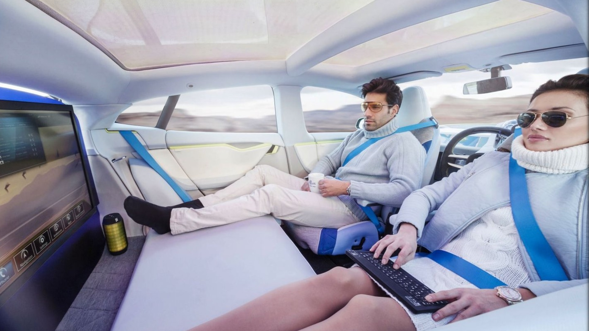
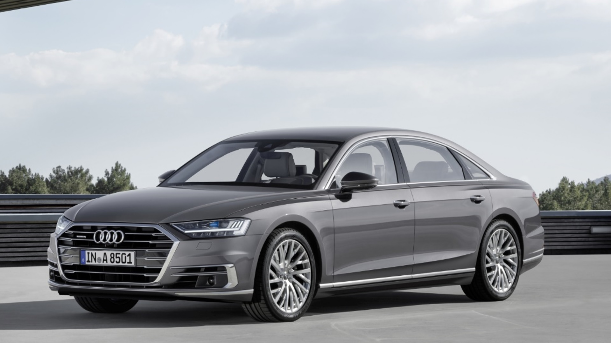

Az önvezető autók fejlődése
Az első komolyabb egyetemi projektmunkámat tankörtársaimmal készítettem,
melyet a Gépészeti Informatika tantárgy keretén belül készítettünk
az önvezető autók fejlődéséről.
A csoportmunka folyamán utánajártunk hol is tartanak napjainkban ezek a járművek,
honnan indultak és hová tartanak.
Fejlődésüket 0-tól 5-ös szintig csoportosíthatjuk, ahol a 0 az automatizáció teljes
hiányát, az 5-ös pedig a teljesen autonóm autót jelenti, mely képes egy személyt A pontból
B pontba vinni anélkül, hogy az autó bármikor emberi irányítás alá kerülne.
A projektmunka eredményeként elkészített "tutorial" videó
ide
vagy a képekre kattintva érhető el.


A videóban lévő szöveg itt található meg